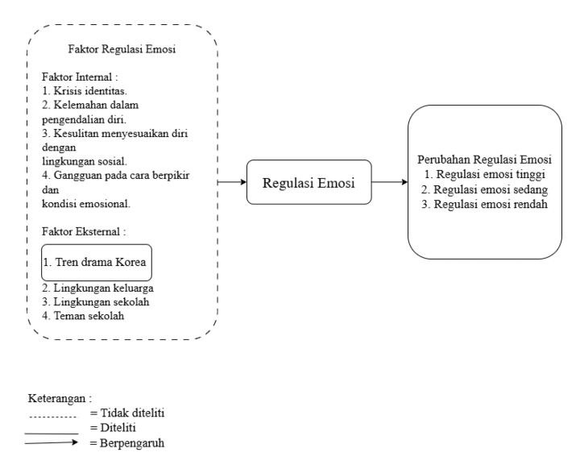
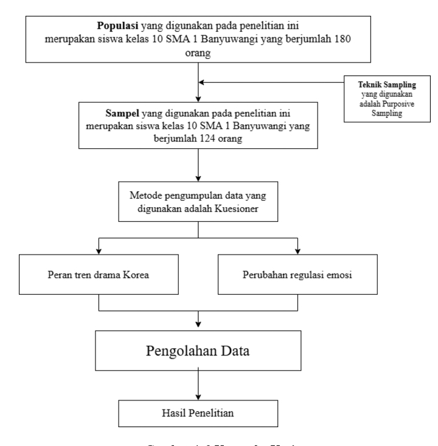

"Bagaimana hubungan tren drama Korea dengan perubahan regulasi emosi pada remaja di SMA 1 Banyuwangi tahun 2026?"
Ringkasan 5 jurnal terdahulu yang menjadi landasan keaslian penelitian ini.
| No. | Penulis / Tahun | Judul | Desain | Variabel | Hasil | Kesimpulan |
|---|---|---|---|---|---|---|
| 1 | Baiti & Syafitri (2021) |
Hubungan antara Intensitas Menonton Drama Korea dengan Suasana Hati Mahasiswa | Kuantitatif korelasional | Bebas: Intensitas menonton drama Korea Terikat: Suasana hati (mood) |
Terdapat hubungan positif antara intensitas menonton dengan afek positif dan hubungan negatif dengan afek negatif. | Drama Korea berpengaruh pada perbaikan suasana hati mahasiswa. |
| 2 | Astuti, Safarina, & Amalia (2022) |
Regulasi Emosi dan Interaksi Sosial pada Mahasiswa Penikmat Drama Korea | Kuantitatif deskriptif korelasional | Bebas: Regulasi emosi Terikat: Interaksi sosial |
Mahasiswa yang memiliki regulasi emosi baik mampu mengoptimalkan interaksi sosial meski menonton drama Korea. | Regulasi emosi yang baik dapat meminimalisir dampak negatif konsumsi drama Korea. |
| 3 | Shaji & Gupta (2024) |
Dampak Drama Korea Terhadap Kesejahteraan Psikologis Remaja | Mixed method | Bebas: Paparan drama Korea Terikat: Kesejahteraan psikologis remaja |
Drama Korea memiliki dampak signifikan pada kondisi emosional remaja bergantung frekuensi menonton. | Paparan drama Korea perlu diimbangi pemahaman regulasi emosi. |
| 4 | Sarker et al. (2025) |
Dampak Drama Korea terhadap Stres, Citra Tubuh, dan Kepuasan Emosional Mahasiswi | Kuantitatif survei | Bebas: Tren drama Korea Terikat: Stres, citra tubuh, kepuasan emosional |
Menonton drama Korea berhubungan dengan kepuasan emosional dan penurunan stres, namun memengaruhi citra tubuh negatif. | Drama Korea berpengaruh multidimensi pada kondisi emosional mahasiswi. |
| 5 | Rahmania, Abdullah, & Mujayapura (2025) |
Pengaruh Algoritma TikTok Terhadap Regulasi Emosi dan Kesehatan Mental Gen Z | Kuantitatif | Bebas: Paparan media digital Terikat: Regulasi emosi & kesehatan mental |
Paparan media hiburan secara berulang memengaruhi pola regulasi emosi dan kesehatan mental Gen Z secara signifikan. | Konsumsi media digital berulang berkontribusi pada perubahan regulasi emosi remaja. |

H₁: Terdapat hubungan antara tren drama Korea terhadap perubahan regulasi emosi pada remaja di SMA 1 Banyuwangi tahun 2026.
| Variabel | Definisi Operasional | Indikator | Alat Ukur | Skala | Kriteria |
|---|---|---|---|---|---|
| Tren Drama Korea Independen |
Tingkat keterlibatan dan kedekatan emosional individu terhadap fenomena atau tayangan drama Korea dalam kehidupan sehari-hari | • Durasi menonton drama Korea per hari/minggu • Frekuensi jumlah episode yang ditonton dalam satu sesi |
Kuesioner Modifikasi Khairiah et al. (2022) 14 item · Validitas: 0,546 · Reliabilitas: 0,913 |
Ordinal | Skor: 1 = Tidak pernah 2 = Jarang 3 = Kadang 4 = Sering Penilaian: Tinggi: >36 Sedang: 21–35 Rendah: <20 |
| Perubahan Regulasi Emosi Dependen |
Proses kemampuan individu untuk mengidentifikasi, mengelola, dan mengekspresikan emosi secara tepat baik emosi positif maupun negatif | • Mengambil pesan moral dari konflik di drama untuk diterapkan di kehidupan nyata • Mengontrol ekspresi emosi agar tidak mengganggu aktivitas sehari-hari • Kemampuan mengenali perubahan suasana hati sebelum dan sesudah menonton drama Korea |
Emotion Regulation Questionnaire (ERQ) Modifikasi Alfinuha (2017) 3 item · Validitas: 0,887 · Reliabilitas: 0,737 |
Ordinal | Skor: 1 = Sangat tidak setuju … 7 = Sangat setuju Penilaian: Tinggi: >36 Sedang: 21–35 Rendah: <20 |
Kerangka kerja penelitian adalah konsep pada penelitian yang saling berhubungan, dimana penggambaran variabel satu dengan lainnya bisa terkoneksi secara detail dan sistematis (Syafrizal et al., 2025).

Gambar 4.3 Kerangka Kerja Penelitian
| Koefisien Korelasi | Kekuatan Hubungan |
|---|---|
| 0,00 | Tidak ada hubungan |
| 0,01 – 0,09 | Hubungan kurang berarti |
| 0,10 – 0,29 | Hubungan lemah |
| 0,30 – 0,49 | Hubungan moderat |
| 0,50 – 0,69 | Hubungan kuat |
| 0,70 – 0,89 | Hubungan sangat kuat |
| > 0,90 | Hubungan mendekati sempurna |
Terdapat hubungan bermakna antara tren drama Korea terhadap perubahan regulasi emosi pada remaja di SMA 1 Banyuwangi tahun 2026
Hipotesis Alternatif (H₁) · Uji Korelasi · α = 0,05
S1 Keperawatan Tingkat 2B · Universitas Dr. Soekardjo
Pembimbing: Novita Surya Putri, S.Kep.Ns., M.Kep · NIDN: 725119003
Kaprodi: Sholihin, S.Kep.Ns., M.Kep · NIDN: 723118302